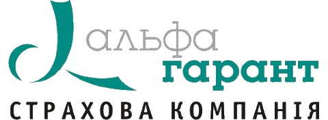
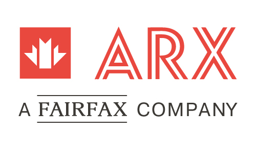
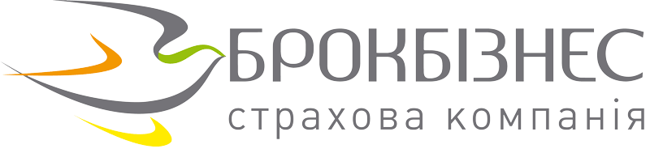
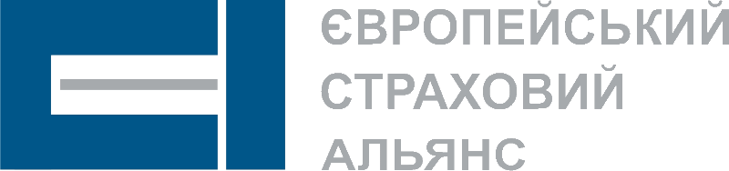
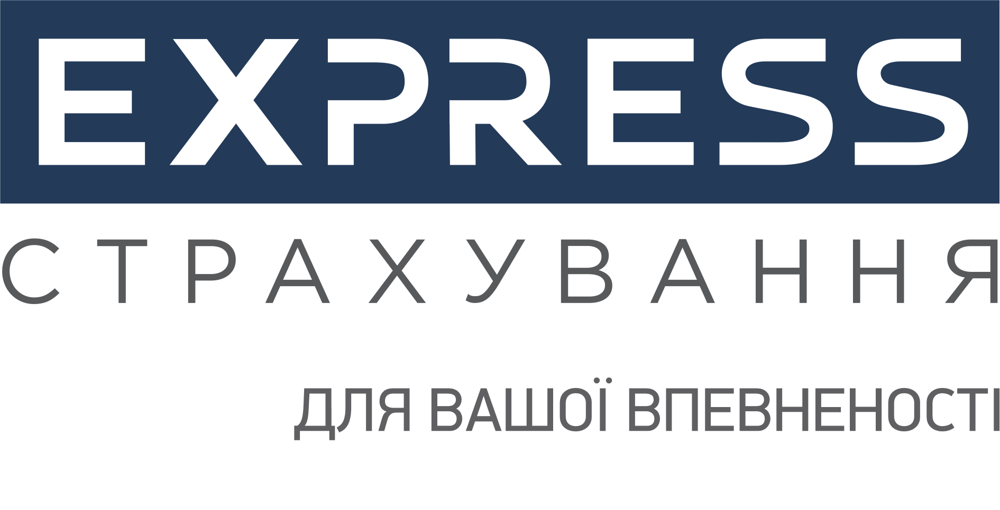
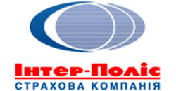
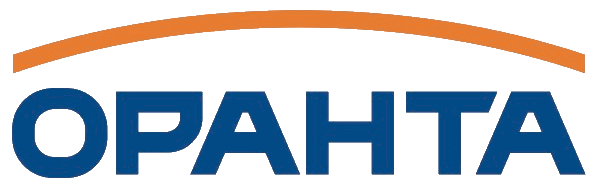
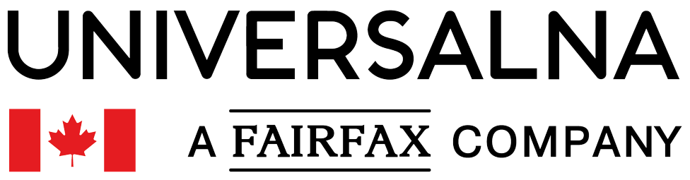
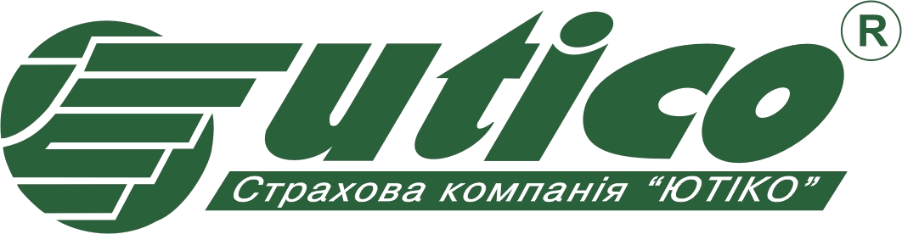
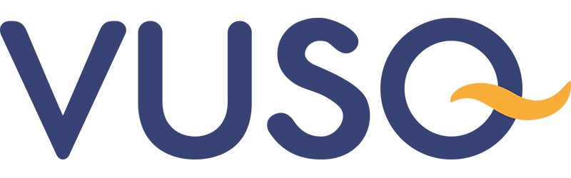

Наші партнери
- 
- 
- 
- 


- 

- 

- 


- 

- 
- 
Ви шукаєте найзручніший і найшвидший спосіб отримати автоцивілку або
зелену карту без зайвої головної болі?
Наш сервіс онлайн
страхування - це рішення, яке заощадить ваш час і кошти. Отримайте
поліс для вашого автомобіля відразу, не виходячи з дому.
Наш сервіс спрощує процес купівлі страхового поліса. Вам потрібно всього лише декілька кроків, щоб отримати необхідний документ.
Завдяки онлайн-формі та швидкій обробці даних ви отримаєте Ваш поліс якнайшвидше.
Ми гарантуємо законність та достовірність кожної виданої страховки.
Наша команда готова відповісти на всі ваші запитання та надати допомогу в будь-який час.
Ми прагнемо надати найкращий досвід онлайн-купівлі автоцивілки та зеленої карти. Ви зможете отримати необхідний документ швидко та легко. Надійність та зручність - ось наші ключові переваги. Оберіть нас, і отримайте свою страховку онлайн вже зараз!
Вигоди, які ми пропонуємо:
1. Швидке та просте оформлення: Забудьте про витрати часу на
особистий візит до страхової компанії. Наш сервіс дозволяє
вам легко та швидко оформити "Зелену карту" онлайн. Все, що вам
потрібно - це декілька кліків мишкою та декілька хвилин вашого
часу.
2. Підтримка Клієнтів: Наша команда завжди готова
відповісти на ваші питання та надати допомогу під час оформлення. Ми
робимо все можливе, щоб зробити процес легким та зручним для Вас.
3. Послуга 24/7: Ви можете отримати доступ до нашого сервісу в
будь-який час, коли це для вас зручно. Незалежно від вашого
місцезнаходження, ми завжди тут, щоб надати вам необхідну "Зелену
карту".
Як це працює: Заповніть Заявку: Введіть необхідні дані та оберіть
тривалість страховки.
Оплата Онлайн: Здійсніть оплату онлайн,
використовуючи безпечні методи платежу. Отримайте Свою Зелену карту:
Ви отримаєте вашу "Зелену карту" на електронну пошту, готову для
використання.
Нехай ваші подорожі будуть безпечними та зручними. Оформіть "Зелену
карту" онлайн з нашим сервісом та нехай ваша подорож буде безпечною!
Захист себе та інших на дорозі. В Україні кожен власник автомобіля повинен пам'ятати про обов'язкове страхування цивільної відповідальності (ОСЦПВ). Цей страховий поліс є не лише юридичною вимогою, але і гарантією захисту вас та інших учасників дорожнього руху.
ОСЦПВ: Захист у разі ДТП Основна функція обов'язкового страхування цивільної відповідальності полягає в тому, щоб забезпечити компенсацію за завдану шкоду під час дорожньо-транспортної пригоди. Якщо ви є винуватцем ДТП, ваша страхова компанія відшкодує збитки потерпілим. Така система покриття допомагає вирішувати фінансові питання цивілізовано та швидко. За винуватця ДТП компенсацію отримують потерпілі, а не винуватець. ОСЦПВ гарантує, що потерпілі отримають відшкодування на ремонт свого транспорту або лікування, якщо це потрібно.
Вищий захист для водіїв З 1 липня 2022 року в Україні були введені нові страхові суми для ОСЦПВ. Тепер виплата виглядає так: За шкоду, заподіяну життю та здоров'ю: 320 000 грн на одного потерпілого, незалежно від кількості потерпілих. За шкоду, заподіяну майну: 160 000 грн на одного потерпілого, але не більше 800 000 грн на одну страхову подію. Ці нові страхові суми гарантують вищий рівень захисту водіїв та пішоходів.
Швидко, зручно, доступно Однією з найбільших переваг є онлайн-оформлення ОСЦПВ. Це дозволяє оформити поліс зі зручності свого дому або офісу без зайвих витрат часу. Завдяки цьому ви можете отримати захист у найшвидший спосіб. Переваги онлайн-оформлення автоцивілки
Ви можете оформити автоцивілку онлайн в будь-який час, день чи ніч, у будь-який день тижня. Електронний поліс: Ваш поліс автоматично надсилається на вашу електронну пошту після оплати, і ви завжди можете мати його під рукою. Економія коштів: Електронний поліс зазвичай дешевший, ніж паперовий, і дозволяє зекономити до 10% від вартості страховки.
Електронний поліс завжди з вами, ви не можете його загубити чи залишити вдома. Як швидко оформити автоцивілку онлайн: Розрахунок індивідуальної вартості: Використовуйте калькулятор автоцивілки, щоб розрахувати вартість страховки, вводячи параметри вашого транспорту та інформацію про себе. Порівняння пропозицій: Ознайомтеся з пропозиціями різних страхових компаній та порівняйте їх, їх опції та ціни. Заповнення анкети: Внесіть інформацію про свій автомобіль, паспортні дані та інші необхідні деталі.
Відмовтеся від паперового поліса: Електронний поліс зазвичай дешевший та зручніший. Використовуйте калькулятор: Використання калькулятора автоцивілки дозволить вам знайти оптимальний тариф.
Якщо ваш автомобіль рідко виходить на дорогу, розгляньте можливість встановлення франшизи для зниження вартості страхування. Додаткові послуги: Порівнюйте страхові компанії за наявністю додаткових послуг, таких як технічна допомога або додаткове покриття. Завдяки правильному підходу до оформлення автоцивілки ви можете значно зекономити на страхуванні, не втрачаючи при цьому важливого захисту на дорозі. Оформіть вашу автоцивілку онлайн прямо зараз та будьте впевнені в своєму захисті під час кожної поїздки.
Відповідно до Закону України «Про обов’язкове страхування цивільно-правової відповідальності власників наземних транспортних засобів», укладаються два види договорів обов’язкового страхування цивільно-правової відповідальності: внутрішній договір обов’язкового страхування цивільно-правової відповідальності; договір міжнародного обов’язкового страхування цивільно-правової відповідальності. Внутрішні договори страхування діють виключно на території України. Договори міжнародного страхування діють на території країн-членів міжнародної системи автомобільного страхування «Зелена картка», зазначених у таких договорах, і посвідчуються відповідним уніфікованим сертифікатом «Зелена картка», що визнається і діє в цих країнах. Під час в’їзду на територію України власник транспортного засобу, який зареєстрований в іншій країні, зобов'язаний мати на весь термін перебування такого транспортного засобу на території України сертифікат міжнародного автомобільного страхування «Зелена картка» або внутрішній договір страхування цивільно-правової відповідальності. У разі виїзду громадянина нашої країни на власному зареєстрованому в Україні транспортному засобі до країн-членів міжнародної системи автомобільного страхування «Зелена картка» власник такого транспортного засобу зобов’язаний мати чинний договір міжнародного страхування, посвідчений відповідним уніфікованим страховим сертифікатом «Зелена картка». На його підставі страховик, який видав цей сертифікат, забезпечить відшкодування шкоди, нанесеної громадянином України третім особам в результаті дорожньо-транспортної пригоди, що сталося з його вини під час дії зазначеного сертифікату. Виплата страхового відшкодування потерпілим у дорожньо-транспортних пригодах здійснюється на умовах, визначених законодавством про обов’язкове страхування цивільно-правової відповідальності країни, на території якої сталася дорожньо-транспортна пригода. З 01 липня 2022 року відповідно до Постанови Правління Національного банку України від 30.05.2022 №109, страхові суми за внутрішніми договорами обов’язкового страхування цивільно-правової відповідальності встановлені у розмірі: - за шкоду, заподіяну життю та здоров’ю - 320 000 грн. на одного потерпілого, незалежно від кількості потерпілих; - за шкоду, заподіяну майну потерпілих - 160 000 грн. на одного потерпілого, але не більше 800 000 грн. на одну страхову подію.
Звільняються від обов'язкового страхування цивільно-правової відповідальності на території України: учасники бойових дій та інваліди війни, що визначені законом, інваліди I групи, які особисто керують належними їм транспортними засобами, особи, що керують транспортним засобом, належним інваліду I групи, у його присутності. Відшкодування збитків від дорожньо-транспортної пригоди, винуватцями якої є зазначені особи, проводить МТСБУ. 50% вартості полісу сплачують: пенсіонери; інваліди ІІ групи; особи, які постраждали внаслідок Чорнобильської катастрофи, віднесена до I або II категорії; учасники війни за умови особистого володінням і керуванням транспортним засобом, об'єм двигуна якого до 2 500 сантиметрів кубічних включно.
Європротокол – спеціальний бланк повідомлення про настання дорожньо-транспортної пригоди, який заповнюється водіями-учасниками ДТП на місці аварії, потім надається страховику та стає підставою для виплати страхового відшкодування потерпілим. Європротокол може заповнюватися як в паперовому вигляді, на спеціальному бланку, так і в електронній формі, з використанням системи «Електронний Європротокол». Система «Електронний Європротокол» є доступною за посиланням dtp.mtsbu.ua Бланк Європротоколу видається автовласнику безкоштовно під час укладення договору обов`язкового страхування цивільно-правової відповідальності власників наземних транспортних засобів. У разі втрати або використання бланку Європротоколу, новий бланк видається страховиком безоплатно на підставі письмової заяви. У країнах Європейського Союзу оформлення ДТП без участі представників дорожньої поліції почало використовуватися ще в 50-х роках минулого століття. Зараз у більшості країн ЄС водіям, які потрапили в ДТП, достатньо заповнити бланк Європротоколу для того, щоб оформити цю подію. Лицьова сторона бланку Європротоколу за структурою глав ідентична в усіх країнах, де він запроваджений, відрізняється тільки мова, на якій надруковано бланк. Це зроблено для того, щоб водії різних країн могли швидко зорієнтуватися, якщо вони потраплять в ДТП на території іншої країни. Європротоколом можна скористатися при умовах, коли: - відсутні травмовані (загиблі) люди, - водії-учасники ДТП мають поліси автоцивільної відповідальності, - наявна згода водіїв транспортних засобів - учасників ДТП щодо її обставин, - у водіїв відсутні ознаки алкогольного, наркотичного чи іншого сп'яніння або перебування під впливом лікарських препаратів. У разі невиконання хоча б однієї з зазначених умов, виклик відповідного підрозділу Національної поліції для оформлення ДТП є обов’язковим. Додаткові умови для застосування системи «Електронний Європротокол»: - транспортні засоби обох учасників ДТП повинні мати діючі поліси внутрішнього страхування. Якщо будь-який ТЗ забезпечений полісом іноземного страховика, необхідно використовувати паперовий бланк Європротоколу або викликати поліцію. - Водії повинні мати при собі справні мобільні телефони. Хоча б один з учасників ДТП повинен мати з собою пристрій (смартфон, планшет, ноутбук) з фотокамерою та доступом в Інтернет. - Ідентифікаційні дані про страхувальника (коди ІНПП або ЄДРПОУ) та про забезпечений транспортний засіб (номерний знак, марку та модель) мають бути зазначені в полісі та коректно внесені в єдину централізовану базу даних МТСБУ. В протилежному випадку Система не зможе правильно ідентифікувати учасників ДТП. Якщо водії скористались Європротоколом (незалежно від його форми), то вони: - мають право залишити місце ДТП, - звільняються від обов'язку інформувати відповідний підрозділ Національної поліції України про настання ДТП, - звільняються від адміністративної відповідальності, передбаченої за спричинення ДТП, - повинні не пізніше трьох робочих днів з дати ДТП звернутись зі своїм примірником заповненого Європротоколу до страховика, з яким укладали договір обов`язкового страхування цивільно-правової відповідальності власників наземних транспортних засобів. В разі використання системи «Електронний Європротокол» повідомлення страховикам учасників ДТП відправляються автоматично. Такий механізм спрощеного оформлення ДТП запроваджено в Україні з 19 вересня 2011 року, коли вступив в силу Закон України «Про внесення змін до деяких законодавчих актів України щодо дорожньо-транспортних пригод та виплати страхового відшкодування» від 17.02.2011 №3045-VI. Важливо пам’ятати, що при оформленні Європротоколу страхове відшкодування є додатково лімітованим. З 10.07.2022, відповідно до Постанови Правління Національного банку України від 30.05.2022 № 108, такий ліміт складає 80 000 грн. Інформаційна система «Електронний Європротокол» впроваджена в МТСБУ з 01.10.2017 року. У відповідності до рішення Президії МТСБУ від 13.07.17 № 403/2017, Європротокол, оформлений з використанням зазначеної системи, є повним аналогом Європротоколів, надісланих або пред’явлених страховику у паперовій формі. Для ознайомлення з інтерфейсом системи «Електронний Європротокол» передбачений режим демонстрації, який також розташований на першій сторінці сайту доступу до Системи (dtp.mtsbu.ua).
Перевірити: чи дійсний договір внутрішнього або міжнародного («зелена картка») обов’язкового страхування цивільно-правової відповідальності автовласників на певну дату за номером бланка поліса; чи забезпечений транспортний засіб на певну дату за державним номером або VIN-кодом автомобіля та отримати дані про страховика, який видав поліс; статус бланку поліса на певну дату за його номером (укладений договір/втрачений/зіпсований/не використаний/знищений). можливо за допомогою запиту до Централізованої бази даних МТСБУ . Для цього потрібно: Вписати у вікно відповідного запиту до ЦБД МТСБУ номер автомобіля або серію і номер бланка страхового полісу. Натиснути «Пошук». У разі, якщо система інформує про те, що такі дані у ЦБД відсутні, спробуйте повторити запит, уважно перевіривши дані, які вводили. Відсутність інформації може бути обумовлена і тим, що дані до ЦБД МТСБУ можуть вноситись страховиком з певною затримкою. Отже, у разі відсутності даних доцільно повторно звернутись з запитом до ЦБД МТСБУ через кілька днів. Система може на один запит видавати декілька варіантів відповіді. Це обумовлено тим, що під одним державним номером можуть бути зареєстровані транспортні засоби різних категорій (наприклад, автобус і легковий автомобіль) або некоректністю внесення страховиком даних до ЦБД.
Дії осіб у разі настання дорожньо-транспортної пригоди (ДТП), яка може бути підставою для здійснення страхового відшкодування, визначені у статті 33 Закону України «Про обов’язкове страхування цивільно-правової відповідальності власників наземних транспортних засобів». Зокрема, учасники ДТП зобов’язані: терміново повідомити про ДТП відповідний підрозділ Національної поліції України; проінформувати один одного про себе, своє місце проживання, назву та місцезнаходження страховика та надати відомості про відповідні страхові поліси; вжити всіх можливих заходів з метою запобігання чи зменшення подальшої шкоди; невідкладно (не пізніше трьох робочих днів з дня настання ДТП) письмово надати страховику, з яким укладено договір обов’язкового страхування цивільно-правової відповідальності або у випадках, передбачених статтею 41 Закону про автоцивільну відповідальність, - МТСБУ, повідомлення про ДТП, а також відомості про місцезнаходження свого транспортного засобу та пошкодженого майна, контактний телефон та свою адресу. Якщо водій транспортного засобу з поважних причин не мав змоги виконати зазначений обов’язок, він має підтвердити це документально. Якщо без поважних причин не повідомити свого страховика про настання ДТП у триденний термін, то після відшкодування збитків, заподіяних третій особі, страховик має право вимагати від свого страхувальника компенсації понесених витрат. Під час оформлення документів про дорожньо-транспортну пригоду відповідний підрозділ Національної поліції України встановлює та фіксує необхідні відомості щодо обов’язкового страхування цивільно-правової відповідальності учасників цієї пригоди. У разі настання ДТП за участю лише забезпечених транспортних засобів (водії яких мають діючі поліси обов’язкового страхування), за умови: відсутності травмованих (загиблих) людей; згоди водіїв цих транспортних засобів щодо обставин її скоєння; відсутності у них ознак алкогольного, наркотичного чи іншого сп'яніння або перебування під впливом лікарських препаратів, що знижують увагу та швидкість реакції, ці водії мають право спільно скласти повідомлення про ДТП (європротокол) Після складення європротоколу водії мають право залишити місце ДТП та звільняються від обов’язку інформувати відповідний підрозділ Національної поліції України про її настання. Оформити електронний європротокол можна тут (https://dtp.mtsbu.ua ). У разі оформлення документів про дорожньо-транспортну пригоду без участі відповідного підрозділу Національної поліції України, розмір страхової виплати за шкоду, заподіяну майну потерпілих, не може перевищувати 80 000 грн. (зазначений ліміт впроваджений з липня 2022 року відповідно до постанови Правління Національного банку від 30 травня 2022 року №108 «Про деякі питання здійснення обов’язкового страхування цивільно-правової відповідальності власників наземних транспортних засобів». З 01 липня 2022 року страхові суми за внутрішніми договорами обов’язкового страхування цивільно-правової відповідальності відповідно до постанови Правління Національного банку від 30 травня 2022 року №108 «Про деякі питання здійснення обов’язкового страхування цивільно-правової відповідальності власників наземних транспортних засобів». встановлені у розмірі: - за шкоду, заподіяну життю та здоров’ю - 320 000 грн. на одного потерпілого, незалежно від кількості потерпілих; - за шкоду, заподіяну майну потерпілих - 160 000 грн. на одного потерпілого, але не більше 650 000 грн. на одну страхову подію. Важливо! Водії та власники транспортних засобів, причетних до ДТП, власники пошкодженого майна зобов’язані зберігати пошкоджене майно (транспортні засоби) у такому стані, в якому воно знаходилося після ДТП, до тих пір, поки його не огляне призначений страховиком або МТСБУ аварійний комісар або експерт, а також забезпечити йому можливість провести огляд пошкодженого майна. Учасники ДТП звільняються від обов’язку збереження пошкодженого майна (транспортних засобів) у такому стані, в якому воно знаходилося після дорожньо-транспортної пригоди, у разі якщо не з їхньої вини протягом 10 робочих днів після одержання страховиком (МТСБУ) повідомлення про ДТП його уповноважений представник не прибув до місцезнаходження такого пошкодженого майна.
Право на регрес визначено Законом «Про обов'язкове страхування цивільно-правової відповідальності власників наземних транспортних засобів» (ст. 38). Існує низка ситуацій, коли можна отримати регресний позов: Винуватець ДТП перебував під впливом алкогольного, наркотичного, будь-якого іншого сп'яніння або під дією лікарських препаратів, які знижують реакцію за кермом; Водій керував автомобілем, не маючи відкритої відповідної категорії; Водій самовільно залишив місце аварії та/або відмовився від проходження огляду на виявлення алкогольного, наркотичного чи іншого сп'яніння; Автомобіль був не в неналежному технічному стані; Страховику не повідомили вчасно про страхову подію; Дія страхового поліса закінчилася на момент ДТП. Страхова компанія може подати регрес не лише до приватної особи (страхувальника), а й, наприклад, до організації, яка відповідає за стан дороги, якщо аварія виникла з її вини. Який порядок проведення регресної вимоги від страхової компанії Регресна вимога пред'являється за рішенням суду. Процедуру умовно можна поділити на 4 етапи: Подання позову від страховика; Розгляд справи; Прийняття рішення та набрання чинності постанови; Повернення коштів страховій компанії. Винуватцеві категорично не рекомендується ігнорувати судовий розгляд, оскільки вердикт при неявці виносять заочно. Є ймовірність, що сума регресу значно побільшає, ніж фактична компенсація потерпілим. Чому? Регресна вимога включає не лише оплату збитків потерпілому, а й вартість експертизи, ведення страхової справи, а також інші витрати страхової компанії. Якщо позивач не погоджується з винесеним вердиктом, він може його оскаржити. Страхова компанія має три роки з дати виконання зобов'язань за договором автоцивілки (компенсації), щоб висунути регресну вимогу.
З рейтингом страхових компаній України можна ознайомитись тут forinsurer.com
Якщо ви маєте намір придбати страховку онлайн, ми пропонуємо
готові варіанти, завдяки яким ви зможете легко порівняти
вартість страховки та обрати найкращий варіант.
Цей спосіб
оформлення страховки дозволить вам значно заощадити час – вам не
потрібно виходити з дому, стояти в черзі та поспішати.
Ви
можете спокійно, без поспіху, консультуватися зі своїми
близькими та вибрати найбільш підходящий пакет страхування. У
разі виникнення питань під час вибору, ви завжди можете
звернутися до наших фахівців для отримання додаткової
консультації. Оплата в режимі онлайн. Просто введіть свої
банківські реквізити, і ми надішлемо вам електронний поліс на
вказану Вами пошту.
Франшиза - це та сума, яку страхова компанія не виплачує. Існування франшизи в полісі передбачає, що певну частину коштів власнику страховки доведеться виплатити самостійно. Давайте розглянемо приклад безумовної франшизи, яка часто зустрічається в автоцивілці. Франшиза в вашому полісі складає 2000 гривень. Сума збитку і страхової виплати становить 50 000 гривень. Це означає, що страхова компанія виплатить лише 48 000 гривень, а решта 2000 гривень повинна бути оплачена вами. Зачем потрібна франшиза? Страховка з франшизою завжди коштує менше, ніж поліс із повним покриттям збитків. Чим вища сума франшизи, тим менше коштує страховка. Ця різниця в ціні особливо відчутна, коли ви придбаєте дорогу страховку, наприклад, КАСКО. Проте і для страхової компанії є вигода в продажу страховок з франшизою. В цьому випадку страхова компанія не виплачує збитки за дрібними випадками, що дозволяє їй заощадити на витратах на відшкодування збитків, зарплаті співробітників і організації робочого процесу. Крім фінансової відповідальності, франшиза також стимулює власника страховки бути обережнішим. Особа, яка має страховку з франшизою, зазвичай розуміє, що в разі аварії або пошкодження машини вона повинна внести свій власний внесок. Це спонукає водіїв діяти обережніше.
В Україні є значна кількість страхових компаній, які пропонують
різноманітні види страхування - як обов'язкові, так і
добровільні, з франшизами або без них, з додатковими опціями,
бонусами та індивідуальним розрахунком для кожного клієнта.
Серед цієї розмаїтості можна розгубитись і вибирати страховий
поліс випадково або недбало, або спираючись на страхового
агента, який, однак, не завжди діє в інтересах клієнта. Тому,
якщо ви маєте намір придбати надійний страховий поліс, який
відповідає вашим потребам, ми рекомендуємо обирати поліс
самостійно. Для того, щоб це зробити, вам потрібна інформація
про різні страхові компанії. Ця інформація стане вам у пригоді
при виборі страхової компанії та конкретного полісу
Перегляд рейтингу МТСБУ
Обов'язкове страхування
відповідальності власників наземного транспорту регулює Моторне
(транспортне) страхове бюро України (МТСБУ). МТСБУ регулярно
публікує свій рейтинг, відомий як "світлофор МТСБУ". Цей рейтинг
включає оцінку страхової компанії за загальними показниками,
якість регулювання збитків і кількість скарг на страхову
компанію. Рейтинг відображається у вигляді кольорових
індикаторів для зручності: червоний - незадовільно, жовтий -
середньо, зелений - високо. Також вказується динаміка змін в
рейтингу протягом останніх місяців. Отже, ви можете швидко
оцінити діяльність страхової компанії і її розвиток Перегляд
відгуків інших водіїв
Думка інших водіїв є важливим
джерелом інформації. Це стосується як позитивних, так і
негативних відгуків. br Консультація через чат або телефон
В будь-який момент ви можете звернутися до нашої служби
підтримки. Наші фахівці стануть вашими особистими консультантами
і допоможуть вам на кожному етапі оформлення страховки, нададуть
необхідну інформацію та поради. Вони допоможуть вам обрати
підходящий поліс, вирішити технічні питання і допоможуть з усіма
аспектами вибору страхової компанії.
Основна мета "Зеленої картки" полягає в тому, щоб забезпечити
компенсацію потерпілим в автопригодах, які сталися за межами
країни реєстрації автомобіля. Цей документ дозволяє водіям
подорожувати за кордоном і мати гарантоване страхове покриття в
разі збитків, які вони можуть заподіяти іншим учасникам
дорожнього руху. Кожна країна, яка є учасницею Міжнародної
системи "Зелена карта", визнає цей документ та забезпечує
виплату страхового відшкодування відповідно до власного
законодавства. Водії зобов'язані мати "Зелену картку" при
перетині кордону. "Зелена карта" сприяє уникненню складнощів при
подорожах і забезпечує захист у разі ДТП на території іншої
країни.
"Міжнародна система автомобільного страхування "Зелена карта"
була створена в 1949 році на основі Рекомендації робочої групи з
автомобільного транспорту Комітету по внутрішньому транспорту
Європейської економічної комісії ООН. Ця система була
запропонована для укладення угод між страховиками, які надають
страхування цивільно-правової відповідальності власників
транспортних засобів, з метою створення єдиної та дієвої системи
страхування для транспортних засобів, що перетинають кордони.
Міжнародна система діє у країнах, де обов'язкове страхування
цивільно-правової відповідальності автовласників, і наявне
Національне бюро, до якого входять всі страховики, які
здійснюють це страхування. Україна є членом Міжнародної системи
з 1997 року. Кожне Національне бюро надає гарантії своєму уряду
щодо дотримання іноземними страховиками чинного законодавства
країни та виплати компенсації потерпілим в ДТП на її території.
Міжнародний страховий сертифікат "Зелена карта" має уніфіковану
форму та є обов'язковим для водіїв, які планують подорожувати за
кордоном на своєму автомобілі. Виплати страхового відшкодування
здійснюються відповідно до законодавства країни, де сталася
ДТП."
Від 1.09.2022 МТСБУ змінило правила укладання поліса «ЗЕЛЕНА КАРТА ДЛЯ ВИЇЗДУ ЗА КОРДОН». Відтепер його потрібно укладати за добу до подорожі, а також роздрукувати електронний договір, адже прикордонна служба вимагає паперовий варіант поліса.
Австрія, Албанія, Андорра, Азербайджан, Бельгія, Болгарія, Боснія та Герцеговина, Швейцарія, Кіпр, Чеська Республіка, Німеччина, Данія, Іспанія, Естонія, Франція, Фінляндія, Ліхтенштейн, Великобританія, Греція, Угорщина, Хорватія, Італія, Ізраїль, Іран, Ірландія, Ісландія, Люксембург, Литва, Латвія, Мальта, Марокко, Молдова, Македонія, Чорногорія, Норвегія, Польща, Румунія, Швеція, Словацька Республіка, Словенія, Сербія, Туніс, Туреччина, Нідерланди, Португалія, Польща.
Розмір ліміту відповідальності (страхова сума) по Зеленій карті дорівнює законодавчо встановленому ліміту тієї країни, на території якої сталася ДТП.